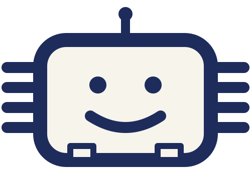
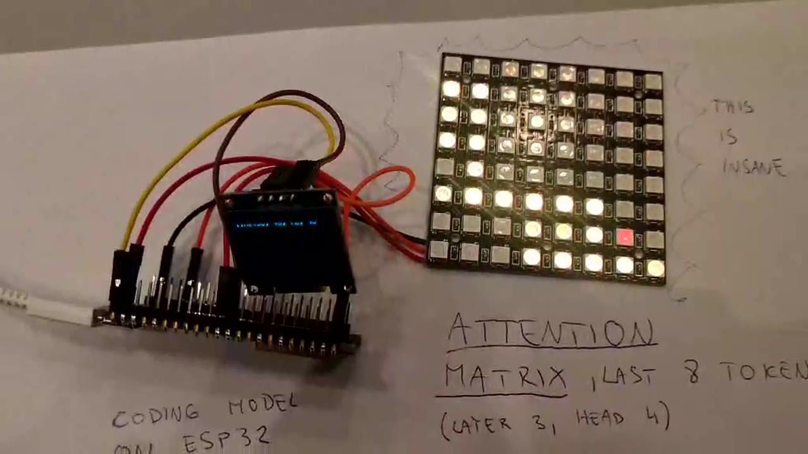
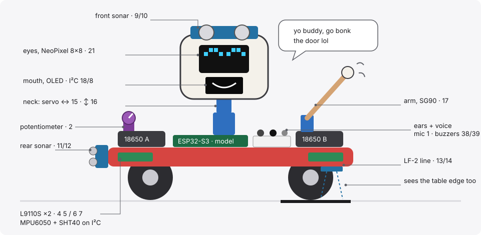

AI in your hand
Language models on a chip that fits in your palm.
Who got them there, what grew from it, and a course to see inside.
The chip
ESP32-S3. About $10.
| SRAM | 512 KB | fast, tiny |
| PSRAM | 8 MB | medium |
| flash | 16 MB | huge, slow |
Half a megabyte to think in.
slvDev/esp32-ai README · github.com
Before: TinyML
The chip listens for one word, or spots a person.
It classifies. It does not write.
TensorFlow Lite Micro on the ESP32, 2020: person detection, micro speech.
TensorFlow blog, Aug 2020 · blog.tensorflow.org
Then: it writes
| Dave Bennett, llama2.c | 260 K parameters | 19 tok/s |
| NanoMind-S3 | 15.2 M | 3 tok/s |
| slvDev, Aug 2026 | 28.9 M | 9.88 tok/s |
Tiny stories, word by word, no cloud. All of it standing on Karpathy's llama2.c.
hackster.io, the projects' own READMEs · www.hackster.io
slvDev's trick: the model stays in flash
| SRAM | activations | many times a token |
| PSRAM | the rest, ~4 M | once a token |
| flash | a 25 M lookup table | ~450 bytes a token |
Per-Layer Embeddings, from Google's Gemma 3n. Most of the model is never loaded.
Same chip, bonus: 48,311 neurons of a real fruit fly brain, escaping a spider.
slvDev/esp32-ai · github.com
What grew from it

it writes programs, the chip checks them

the room sets its temperature

attention on 64 LEDs

Franta, a car with a dial into its head
A story-teller can't be checked. A program can.
moudrkat, 2026 · github.com
This course: not how big. What happens inside.
| 1 · a program | what a tiny model does | one command |
| 2 · temperature | softmax, entropy, a thermometer | one command |
| 3 · attention | one head, in your hand | 3 solder joints |
| 4 · wheels | inputs that are not words | an afternoon |
| 5 · a trick | what training is | 3½ min |
| 6 · your robot | a model in any language | 48 s |


Your turn
moudrkat.github.io/ai-in-your-hand
Start in Colab: free GPU, about five minutes, no board.
← → · swipe · ?print for PDF